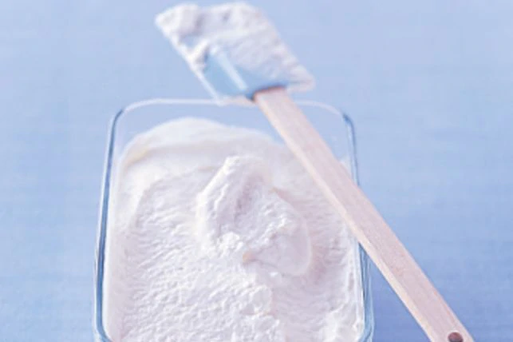

Simple Ice Cream

Description
It takes only four ingredients to make this refreshing vanilla ice cream.
Ingredients
- 1 cup milk
- 1/2 cup sugar
- 2 cups thickened cream
- 1-2 tsp vanilla extract
Steps
- In a medium bowl combine milk and sugar, and stir until all the sugar has dissolved. Stir in the thickened cream and vanilla to taste.
- Remove the bowl from the freezer, assemble the maker and turn it on. While it's running, pour the milk and cream mixture into the freezer bowl through the ingredient spout.
- Remove the bowl from the freezer, assemble the maker and turn it on. While it's running, pour the milk and cream mixture into the freezer bowl through the ingredient spout.
- Transfer the ice cream to a container and freeze till it firms. (This is optional. If you prefer your ice cream soft, it can be eaten immediately).